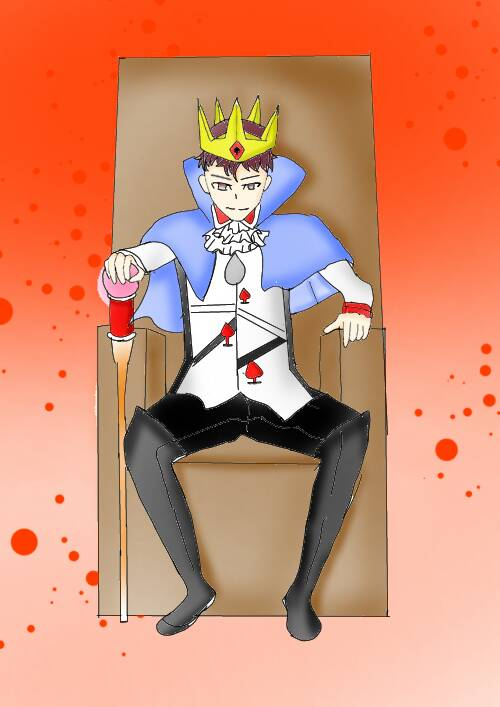

皇帝
The Emperor
四大元素：元素火--絕對權威
代表神話人物：宙斯
皇帝是陽性和邏輯的原型，
他也是人類開始發展律法、社會結構的第一張牌，
王冠是人間權力的象徵，
他手中握的權丈代表男性的創造力和潛力，
手握的圓球代表世界，山羊頭是宙斯的象徵，
他正直、公平而實際，並明了人間沒有不勞而獲的事，
所以皇帝的感情、理智，是一種經過訓練的實際方式，
他能夠領導他人，是因為他把握內在真正的力量，
“穩固性”為其特性。
關鍵語熱情、毅力、領導力、理想、服務
★暗示訓練自己和實際致力於生活
牌正面透過自律和實際的努力達到成功。
牌反面缺乏訓練，激情勝於智慧，情感壓倒理智。
國王牌是俱有威嚴的，他是嚴格的父親，一絲不苟的君主，
無人能挑戰他的權力，
國王對於開拓疆土是積極的（白羊座＋火元素），
但對他來說『穩固守成』才是首要的（數字四）。
國王可以代表一個人的性格、也可以代表一個人的精神理念，
或是一件事情的狀態如何，在實際的占卜運用當中，
最常看到幾種代表性人物：老闆、長官、運動選手、領導人。
在工作、領導方面的能力絕對是有目共睹的，
唯一缺乏的是情感上的交流，
不管是上司對下屬，還是丈夫對老婆，國王都是不善於表達的，
有時會讓人感覺過於嚴肅無法親近。
國王是有理想、目標、企圖心的，
就算現在還沒表現出來，但他都是有那個實力的，
有時候只是在等待對的時機，或是等待被開發的潛力。
離開卡牌